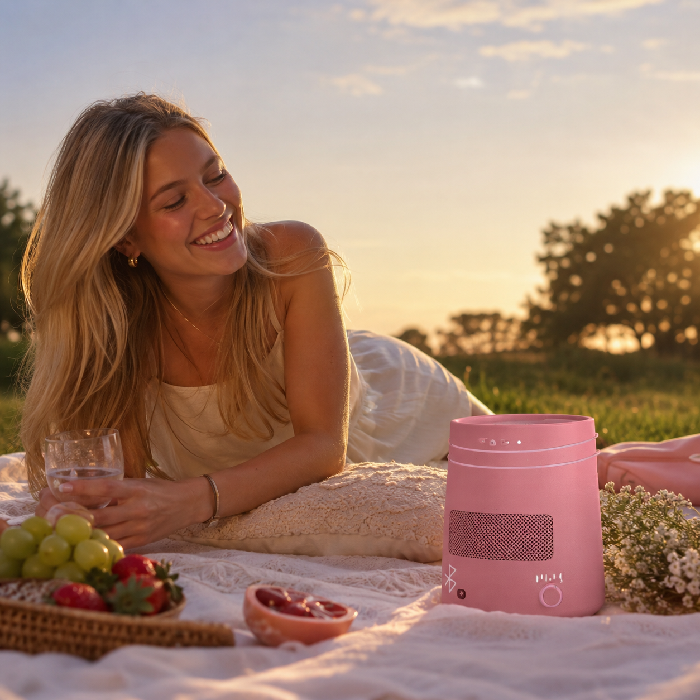
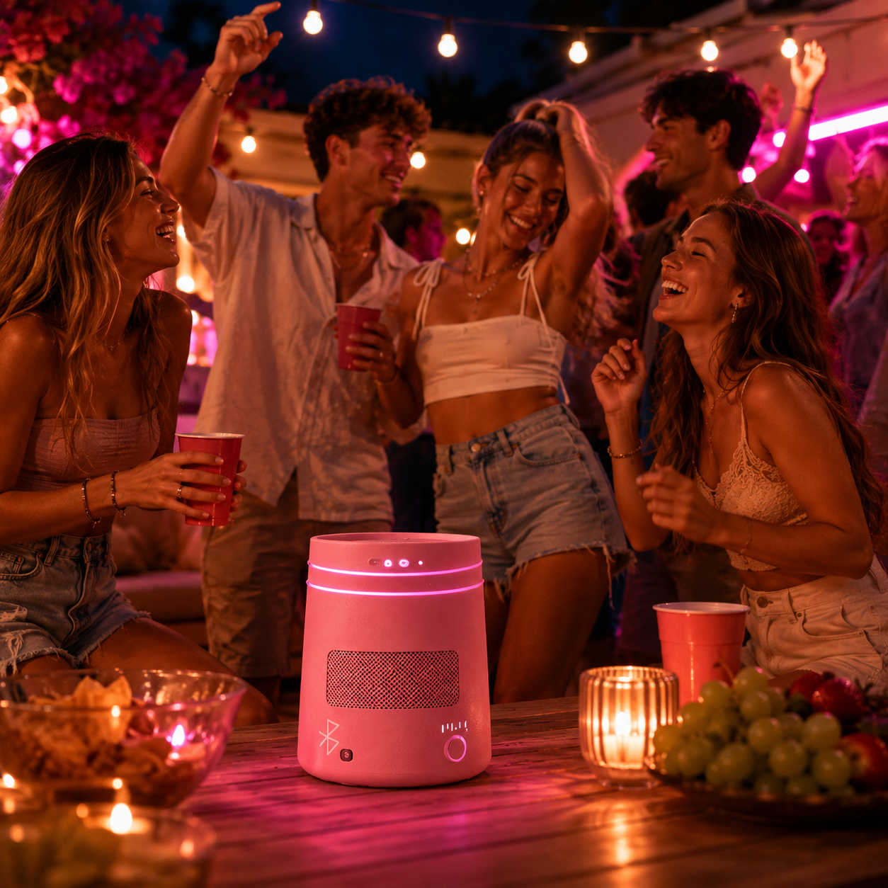

Batteri til hele dagen
Op til 18 timers batteritid giver frihed til musik hele dagen. Fra yoga og picnic til lange aftener med veninderne.
LUMINA One er mere end bare en højtaler. Fra spontane fester til rolige aftener skaber den glæde, fællesskab og minder der varer ved.

1440,-
Op til 18 timers batteritid giver frihed til musik hele dagen. Fra yoga og picnic til lange aftener med veninderne.
Lad alle være med til at styre musikken gennem appen. Tilføj sange, del stemningen og skab playlists sammen med veninderne.
Et let og kompakt design skabt til livet på farten Fra stranden til veninderne er den nem at tage med uden at føles tung.
Et stilrent design hvor funktion og æstetik mødes. Alle funktioner er integreret i et rent og moderne udtryk uden unødvendige detaljer.
Tag højtaleren med ud i solen og fyld picnicen med afslappende musik og gode samtaler. Det lette design gør den nem at tage med, mens batteriet holder hele eftermiddagen uden problemer. Skabt til små øjeblikke der bliver til gode minder.


Fra små sammenkomster til sene sommeraftener leverer højtaleren kraftfuld lyd der samler mennesker. Lad vennerne tilføje deres yndlingssange gennem appen og gør musikken til en fælles oplevelse. Fordi de bedste fester huskes gennem lyden, energien og menneskene omkring dem.
Skab en rolig atmosfære med klar og behagelig lyd til yoga, meditation eller afslapning. Det minimalistiske design passer naturligt ind i rummet uden at tage fokus fra øjeblikket. Bare ren lyd der hjælper med at skabe nærvær og ro.

Op til 18 timers spilletid med et genopladeligt batteri designet til musik hele dagen via USB-C.
Bluetooth 5.3, AUX-indgang og mulighed for at parre op til 3 andre LUMINA One enheder.
Op til 100 dB – nok til en strandfest eller park-picnic uden at være “for meget”.

Integreret ambient-lys. Skift mellem rolige eller energiske lysoplevelser alt efter øjeblikket.
Designet til hverdagen med beskyttelse mod regn Perfekt til afslappende dage ved poolen.
Kun 3 kg – nem at tage med i hånden eller i den medfølgende stof-tote bag.